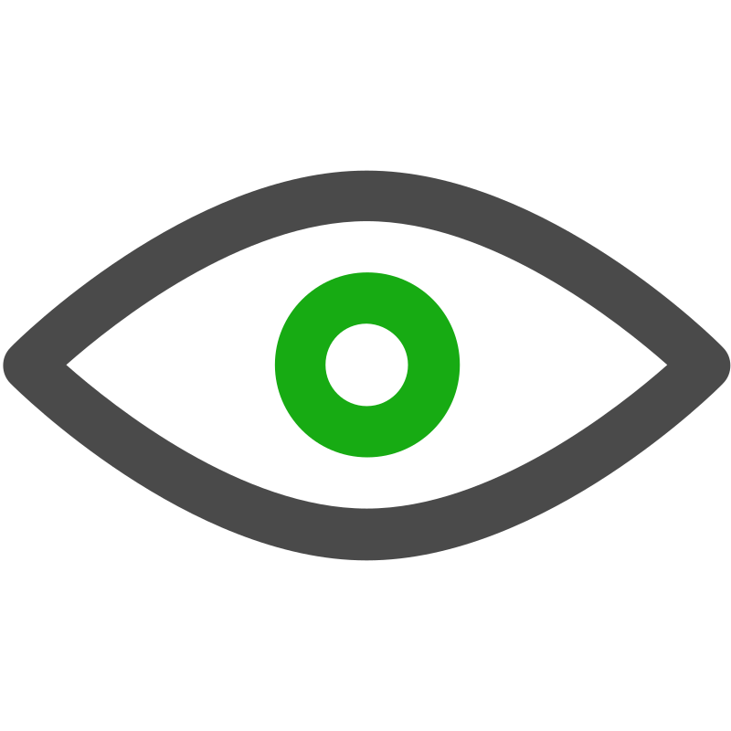
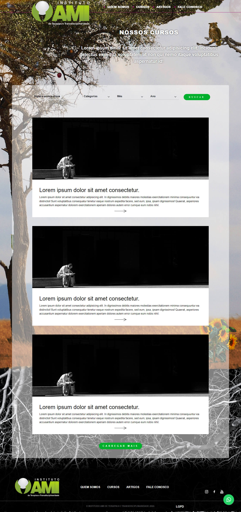
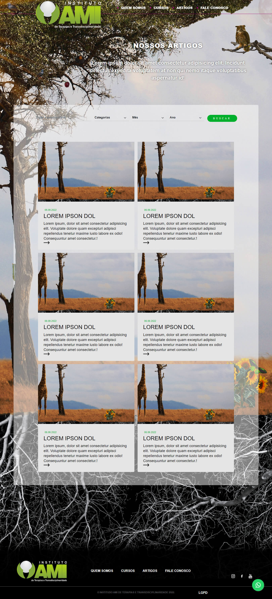

Sobre
Olá! Meu nome é Samuel Lima, tenho 24 anos e sou apaixonado por tecnologia. Desde cedo, sempre me interessei por computadores e suas infinitas possibilidades. Foi então que decidi me dedicar ao aprendizado de programação, e desde então venho explorando diferentes áreas dessa fascinante área do conhecimento.
Sou uma pessoa dedicada em tudo que faço, e sempre busco aprender coisas novas, seja em projetos pessoais ou em trabalhos profissionais. Estou sempre atento às novidades e tendências da tecnologia, buscando me manter atualizado para estar preparado para os desafios do mercado.
Sou um profissional comprometido com a qualidade e a entrega de resultados. Estou sempre em busca de novos desafios e oportunidades para continuar crescendo profissionalmente e pessoalmente.
Estou animado para compartilhar meu portfólio com você e mostrar o que sou capaz de fazer como desenvolvedor. Espero que possamos nos conectar em breve e colaborar juntos em projetos desafiadores e gratificantes!
Projetos
Clima Agora
Clima Agora
Este projeto é uma aplicação que utiliza HTML, CSS e JavaScript para buscar informações meteorológicas de uma API de terceiros. A aplicação permite que o usuário pesquise o tempo em uma determinada cidade e exibe as informações na tela.
Site de advocacia

Site de advocacia
Este projeto é um site institucional para uma empresa de advocacia construído por um desenvolvedor que utilizou habilidades em HTML, CSS, JavaScript e Bootstrap. O site apresenta um design profissional fornecido pela empresa contratante e oferece informações sobre a empresa e seus serviços de forma responsiva e fácil de usar.

Projeto instituto


Projeto instituto
Como desenvolvedor, fui responsável pelo desenvolvimento de um site institucional para um instituto. Utilizei minhas habilidades em HTML, CSS, JavaScript e Bootstrap para criar uma plataforma responsiva e fácil de usar que apresenta informações sobre o instituto e suas atividades. O design foi fornecido pela empresa contratante, trabalhei para transformá-lo em um site atraente e moderno, otimizado para mecanismos de busca. O objetivo era fornecer uma plataforma informativa e profissional para o instituto e estou feliz com o resultado final.
Site Turismo
Site Turismo
Eu desenvolvi um site institucional para uma empresa de turismo, utilizando HTML, CSS, JavaScript e Bootstrap. O site apresenta informações sobre os destinos turísticos e serviços oferecidos pela empresa, além de recursos como ferramentas de reserva online e guias turísticos. O design foi fornecido pela empresa contratante, mas trabalhei para torná-lo moderno e otimizado para mecanismos de busca.
Projeto awax
Site Awax
Eu desenvolvi um projeto chamado AWAX com fins de estudo e prática em programação. O AWAX é um site responsivo construído utilizando HTML e CSS e o design foi fornecido por um site fictício para fins educacionais. Este projeto me permitiu aprimorar minhas habilidades em programação front-end, como a construção de layouts responsivos e a utilização de técnicas de SEO. Embora o AWAX não tenha sido construído com a utilização de frameworks ou JavaScript, estou muito satisfeito com o resultado final e considero-o uma experiência valiosa para o meu desenvolvimento profissional.
Site Starbucks
Site Starbucks
Eu desenvolvi um projeto para fins de estudo e prática em programação, baseado no site do Starbucks. Utilizei HTML e CSS para criar um site responsivo que apresenta informações sobre os produtos e serviços da empresa. Meu objetivo foi reproduzir o design e a funcionalidade do site original, enquanto aprimorava minhas habilidades em programação front-end.
Studio de tatuagem
Studio de tatuagem
Recentemente, desenvolvi um site para um estúdio de tatuagem como parte de um projeto pessoal. Eu projetei o layout e utilizei HTML, CSS e Bootstrap para implementá-lo. Adicionei algumas funcionalidades interativas com JavaScript, como um slider de imagens e animações simples. Foi uma ótima oportunidade para praticar minhas habilidades de design e programação.
Music player
Music Player
Um player de música usando HTML, CSS e JavaScript. O objetivo principal deste projeto foi aprimorar minhas habilidades de programação e lógica, e embora o design possa não ser o mais atraente, o reprodutor de música em si é funcional e fácil de usar. Aprendi muito sobre como manipular áudio com JavaScript e fornecer uma interface intuitiva para os usuários controlarem a reprodução de suas músicas favoritas. Foi uma ótima maneira de praticar minhas habilidades de desenvolvimento web enquanto criava algo útil e divertido.
Loja Simples
Chat Online
Chat Online
Desenvolvi um chat geral usando Socket.io. O chat permitia que várias pessoas conversassem em tempo real e cada usuário que entrava era adicionado a uma lista de usuários online. Foi um projeto desafiador, mas extremamente gratificante. Aprendi muito sobre como usar a tecnologia de sockets para criar uma experiência de bate-papo ao vivo e fornecer uma lista atualizada de usuários online.
Desenvolvimento de Páginas Intranet
Desenvolvimento de Páginas Intranet
Desenvolvi algumas páginas internas de um site existente usando HTML, CSS e JavaScript. Meu principal objetivo foi garantir que as páginas fossem desenvolvidas de forma eficiente e escalável, enquanto mantinham a aparência e funcionalidade do site existente. Eu trabalhei em estreita colaboração com a equipe de design para garantir que as páginas refletissem fielmente a identidade visual da empresa e fornecessem uma experiência de usuário intuitiva e agradável. Além disso, utilizei as melhores práticas de codificação para garantir a manutenção fácil e a escalabilidade futura do site. Foi um projeto interessante e desafiador que me permitiu expandir minhas habilidades em desenvolvimento web.
Envio de emails
Envio de emails
Desenvolvi um projeto backend em Node.js utilizando a biblioteca Nodemailer para enviar e-mails de forma automatizada. Utilizei a linguagem JavaScript e apliquei os conceitos de programação assíncrona para que o envio de e-mails fosse realizado de forma eficiente. Além disso, integrei o projeto com um serviço de hospedagem em nuvem para garantir a disponibilidade do sistema. O objetivo principal foi desenvolver uma solução escalável e de fácil manutenção para envio de e-mails em massa.
Node Resumo
Node Resumo
Sou um desenvolvedor Junior com conhecimento em autenticação, integração com banco de dados, integração com express-mustache, jws passaport, criação de API's e habilidade em implementar validações